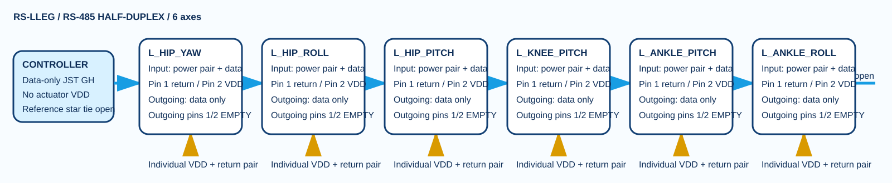
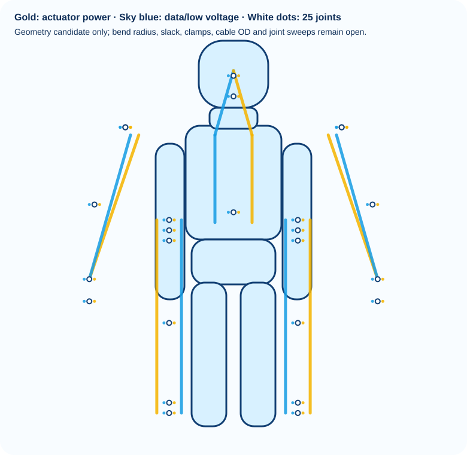
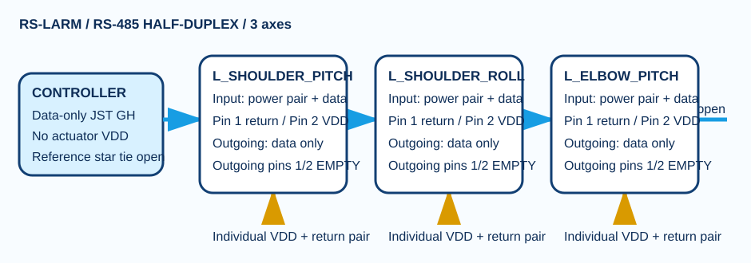
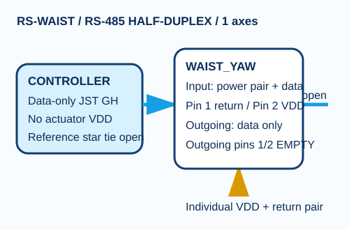
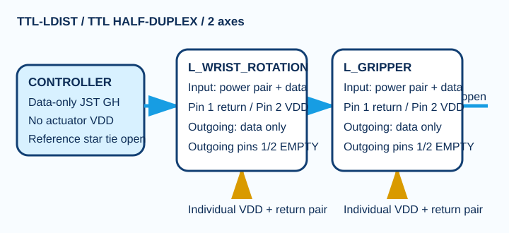
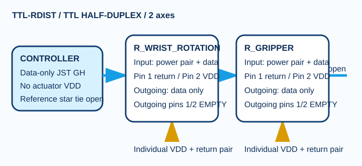
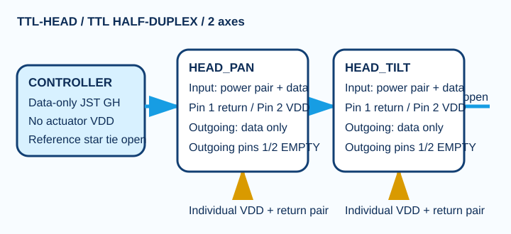

RS-LLEG

HR-30 · Whole-body P0.1
Every body corridor, actuator feed, data bus, joint loop and current ECAD terminal is accounted for—without pretending unresolved cable and protection choices are finished.

Select a data bus to filter the joint table; select it again to show all.
Each actuator receives an individual VDD/return pair. Inter-actuator outgoing connectors carry data only; GND and VDD cavities stay empty.






| Axis | Data bus | Actuator | Joint datum (mm) | Moving loops |
|---|---|---|---|---|
| L_HIP_YAW | RS-LLEG | XH540 | (62.500,0.000,410.000) | LOOP-L_HIP_YAW-PWR LOOP-L_HIP_YAW-DATA |
| L_HIP_ROLL | RS-LLEG | XH540 | (62.500,0.000,390.000) | LOOP-L_HIP_ROLL-PWR LOOP-L_HIP_ROLL-DATA |
| L_HIP_PITCH | RS-LLEG | XH540 | (62.500,0.000,370.000) | LOOP-L_HIP_PITCH-PWR LOOP-L_HIP_PITCH-DATA |
| L_KNEE_PITCH | RS-LLEG | XH540 | (62.500,0.000,210.000) | LOOP-L_KNEE_PITCH-PWR LOOP-L_KNEE_PITCH-DATA |
| L_ANKLE_PITCH | RS-LLEG | XM430 | (62.500,0.000,55.000) | LOOP-L_ANKLE_PITCH-PWR LOOP-L_ANKLE_PITCH-DATA |
| L_ANKLE_ROLL | RS-LLEG | XM430 | (62.500,0.000,35.000) | LOOP-L_ANKLE_ROLL-PWR LOOP-L_ANKLE_ROLL-DATA |
| R_HIP_YAW | RS-RLEG | XH540 | (-62.500,0.000,410.000) | LOOP-R_HIP_YAW-PWR LOOP-R_HIP_YAW-DATA |
| R_HIP_ROLL | RS-RLEG | XH540 | (-62.500,0.000,390.000) | LOOP-R_HIP_ROLL-PWR LOOP-R_HIP_ROLL-DATA |
| R_HIP_PITCH | RS-RLEG | XH540 | (-62.500,0.000,370.000) | LOOP-R_HIP_PITCH-PWR LOOP-R_HIP_PITCH-DATA |
| R_KNEE_PITCH | RS-RLEG | XH540 | (-62.500,0.000,210.000) | LOOP-R_KNEE_PITCH-PWR LOOP-R_KNEE_PITCH-DATA |
| R_ANKLE_PITCH | RS-RLEG | XM430 | (-62.500,0.000,55.000) | LOOP-R_ANKLE_PITCH-PWR LOOP-R_ANKLE_PITCH-DATA |
| R_ANKLE_ROLL | RS-RLEG | XM430 | (-62.500,0.000,35.000) | LOOP-R_ANKLE_ROLL-PWR LOOP-R_ANKLE_ROLL-DATA |
| L_SHOULDER_PITCH | RS-LARM | XM540 | (105.000,0.000,590.000) | LOOP-L_SHOULDER_PITCH-PWR LOOP-L_SHOULDER_PITCH-DATA |
| L_SHOULDER_ROLL | RS-LARM | XM430 | (105.000,0.000,590.000) | LOOP-L_SHOULDER_ROLL-PWR LOOP-L_SHOULDER_ROLL-DATA |
| L_ELBOW_PITCH | RS-LARM | XM430 | (135.000,0.000,440.000) | LOOP-L_ELBOW_PITCH-PWR LOOP-L_ELBOW_PITCH-DATA |
| R_SHOULDER_PITCH | RS-RARM | XM540 | (-105.000,0.000,590.000) | LOOP-R_SHOULDER_PITCH-PWR LOOP-R_SHOULDER_PITCH-DATA |
| R_SHOULDER_ROLL | RS-RARM | XM430 | (-105.000,0.000,590.000) | LOOP-R_SHOULDER_ROLL-PWR LOOP-R_SHOULDER_ROLL-DATA |
| R_ELBOW_PITCH | RS-RARM | XM430 | (-135.000,0.000,440.000) | LOOP-R_ELBOW_PITCH-PWR LOOP-R_ELBOW_PITCH-DATA |
| WAIST_YAW | RS-WAIST | XM540 | (0.000,0.000,425.000) | LOOP-WAIST_YAW-PWR LOOP-WAIST_YAW-DATA |
| L_WRIST_ROTATION | TTL-LDIST | XC330 | (140.000,0.000,295.000) | LOOP-L_WRIST_ROTATION-PWR LOOP-L_WRIST_ROTATION-DATA |
| L_GRIPPER | TTL-LDIST | XC330 | (140.000,0.000,252.000) | LOOP-L_GRIPPER-PWR LOOP-L_GRIPPER-DATA |
| R_WRIST_ROTATION | TTL-RDIST | XC330 | (-140.000,0.000,295.000) | LOOP-R_WRIST_ROTATION-PWR LOOP-R_WRIST_ROTATION-DATA |
| R_GRIPPER | TTL-RDIST | XC330 | (-140.000,0.000,252.000) | LOOP-R_GRIPPER-PWR LOOP-R_GRIPPER-DATA |
| HEAD_PAN | TTL-HEAD | XC330 | (0.000,0.000,650.000) | LOOP-HEAD_PAN-PWR LOOP-HEAD_PAN-DATA |
| HEAD_TILT | TTL-HEAD | XC330 | (0.000,0.000,690.000) | LOOP-HEAD_TILT-PWR LOOP-HEAD_TILT-DATA |
Each actuator now has its own positive/return power pair. The P0.1 split-harness candidate combines that pair with incoming data at the actuator input housing, while the outgoing housing populates data contacts only. GND and VDD cavities remain empty so power is not daisy-chained through preceding actuator connectors.
The 76.08 A figure is the arithmetic sum of momentary 12 V stall-current endpoints—not a normal-load forecast, fuse rating, cable rating, or permission to energize.